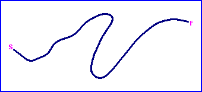
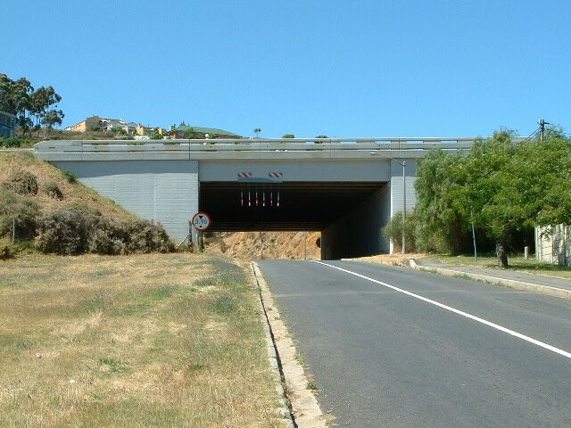
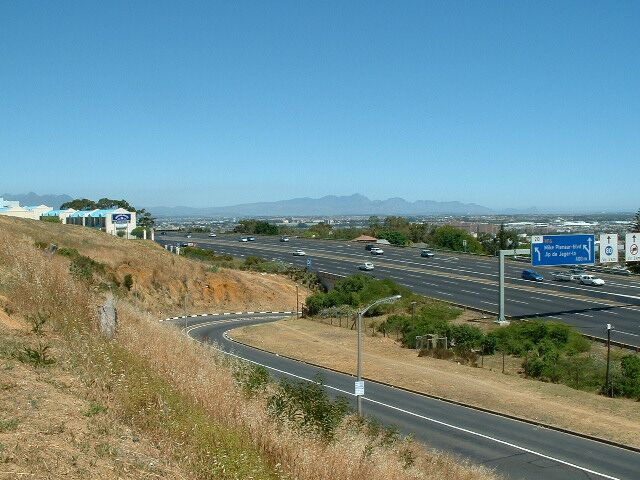
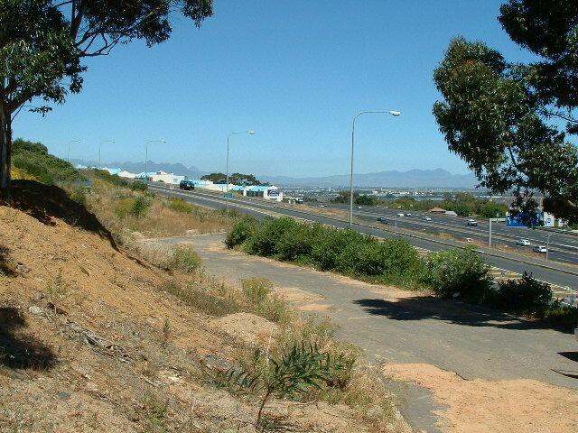
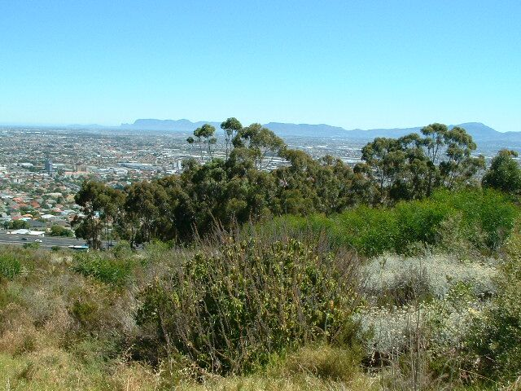

Parow, South Africa
Type: Hillclimb
Length: 0.435 Miles / 0.700 km
Used: Late 1940's to early 1950's
Photographs Taken: November, 2003
Hill Climb circuit of approximately 700meters situated on the slopes of the Tygerberg, 15km NE of the Cape Town City Center. It was used in the late 1940’s and early 1950’s and used an access gravel road to the Plattekloof Quarry. The starting point was under a bridge with the main Highway (N1) leading out of Cape Town to the north, crossing overhead. Only the starting area and a small section of the road still exists today. A newly built office complex covers part, while the rest fall within a Nature Reserve and are covered with foliage

Return to racingcircuits.net's Photo Archive Main Index

1) Starting point under bridge

2) Current road exiting from under bridge. N1 Highway crossing overhead.

3) The remains of a section of the road (it was given an asphalt cover in later years)

4) Slopes covered by foliage with quarry to the extreme right. The background shows a view
of Parow and some of Cape Town’s southern suburbs, with the mountain range leading to
Cape Point in the distance.
Text & Graphics ©Marius Matthee. Reproduced here with kind permission.